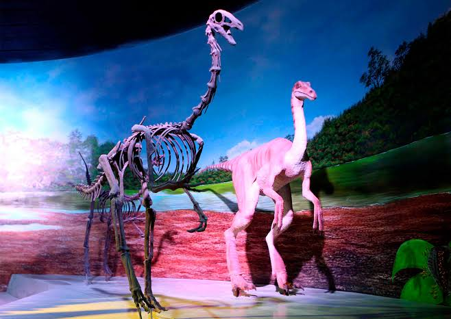

De visita al Cretacico
Por: Karla Machado Silver
Categoría: Adolescentes y adultos
Días: Sabado
Horario: 11:00
Recorrido de 2 hrs. donde identificaremos
y conoceremos las cualidades
de nuestros antepasados y animales
exoticos.
Registrarte

Los Primeros Bipedos
Por: Brenda Tenorio Pérez
Categoría: Adolescentes y adultos
Días: Lunes, Miercoles
Horario: 16:00
El eje principal del recorrido es
favorecer el desarrollo integral;
psicomotor e intelectual
usando una gran diversidad
de actividades lúdicas y de memoria.
Registrarte

Mamiferos al asecho
Por: Brenda Tenorio Pérez
Categoría: Adolescentes y adultos
Días: Jueves, Viernes
Horario: 14:00
Curso de 7 sesiones donde
identificaremos y conoceremos las
especies más antiguas mediante
técnicas de aplicación.
Registrarte